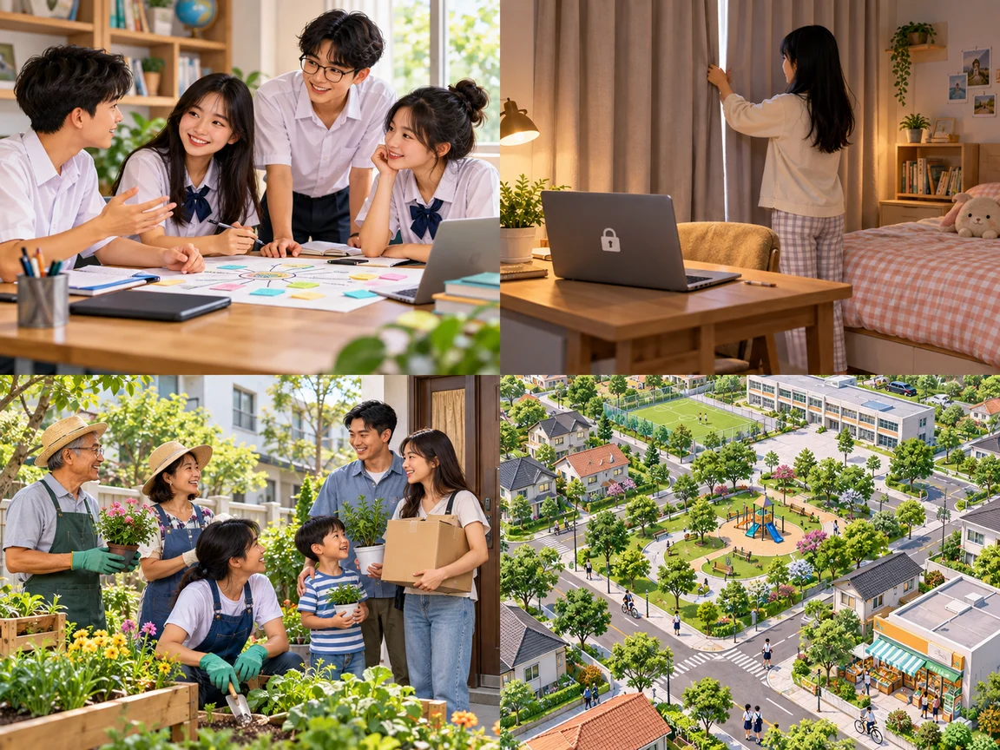

Living in a smart city
Lesson 5 — Listening
3Five stops in 45 minutes
- 👍
Good or bad?
Warm-up
5 min - 📚
Before listening
Task 1 + predict
9 min - 🎧
The interview
Tasks 2–3
20 min - 💬
Discuss
The most serious problem
8 min - ✅
Wrap-up
Exit ticket
3 min
Warm-up
Smart city: good or bad?
5 minutesSmart city: good or bad?
🤖 A robot does household chores. 👍 saves time
📷 Cameras monitor public spaces. 👍 safety · 👎 privacy
🚦 Smart traffic lights reduce congestion. 👍 less traffic
🔐 An app stores your personal information. 👎 who uses it?
👵 Some residents find new technology difficult. 👎 hard to use
Before listening
Task 1 + predict
9 minutes
interact
(v) /ˌɪntərˈækt/ tương tác Neighbours can interact in shared spaces.privacy
(n) /ˈprɪvəsi/ sự riêng tưsense of community
(n phr) /ˌsens əv kəˈmjuːnəti/ cảm giác gắn bó với cộng đồngneighbourhood
(n) /ˈneɪbəhʊd/ khu dân cư, khu phốWords in the interview
1. interact /ˌɪntərˈækt/ c
2. privacy /ˈprɪvəsi/ d
3. sense of community b
4. neighbourhood /ˈneɪbəhʊd/ a
a. an area of a town
b. the feeling of belonging to a group
c. to talk or do things with other people
d. the state of being alone and not watched or interrupted by other people
What problems may she talk about?
- privacy
- safety
- smart devices
- community
- personal information
- lonely
Which words may appear in the listening?
I think she may talk about … because …
While listening
Ms Stevens and the smart city
20 minutesListen for the main idea
1. What is the interview mainly about? B
A. Advantages of living in a smart city.
B. Problems of living in a smart city.
C. Attractions of urban lifestyles.
Listen for details
2. How are cameras and sensors used in a smart city? A
A. To collect information about city dwellers and their activities.
B. To collect information about the government and some companies.
C. To improve city dwellers’ safety and security.
3. Why does Ms Stevens feel lonely? A
A. Because she doesn’t interact with many people.
B. Because she can’t use the smart devices.
C. Because she doesn’t like her neighbourhood.
Situations → problems
📷 There are cameras and sensors everywhere. → City dwellers may lose their (1) right to privacy in public areas.
🤖 People use (2) smart technologies to help them with household chores. → It is not easy for some people to get familiar with and use the smart devices.
Situations → problems
👥 Some city dwellers (3) interact with each other face to face less. → There is no (4) sense of community in the neighbourhood.
Tip
Guess the word type first: (1) noun · (2) noun · (3) verb · (4) noun.
The interview begins
Host: Welcome to our weekly programme Urban Lifestyle. In today’s programme, we’ll be talking about the disadvantages of living in a smart city. Joining me now in the studio is Ms Stevens, a city dweller who has been living in a smart city for a year now. … What are you worried about most?
Someone is watching
Ms Stevens: Well, my main worry is losing my right to privacy in public places. You know, cameras and sensors are everywhere, and they collect information about me and my activities. … The government and some companies have so much personal information about city dwellers.
Lonelier than ever
Ms Stevens: It took me a long time to get familiar with all the smart devices at home. … I interact with very few people face to face because most of the activities can be done online. … Our smart devices are all connected, but it seems we’re becoming lonelier than any previous generation.
After listening
The most serious problem
8 minutesDo you agree with Ms Stevens? Which problem is the most serious? Why?
- 🔐
losing privacy
- 🗂️
companies have our personal information
- 📱
smart devices are hard to use
- 🤝
no sense of community
How can we make smart cities more human?
Lose privacy → clear rules for collecting data
Hard to use devices → weekly training for residents
Less face-to-face interaction → community events and shared spaces
In our group, we think … is the most serious because … · The city should …
Before you leave…
1. What is one advantage of living in a smart city?
2. What is one disadvantage of living in a smart city?
3. How can we protect privacy and create a sense of community?
Homework
1. Do the Listening exercises in the workbook.
2. Write 3 sentences: problems of living in a smart city.
3. Get ready for Lesson 6 — Writing.